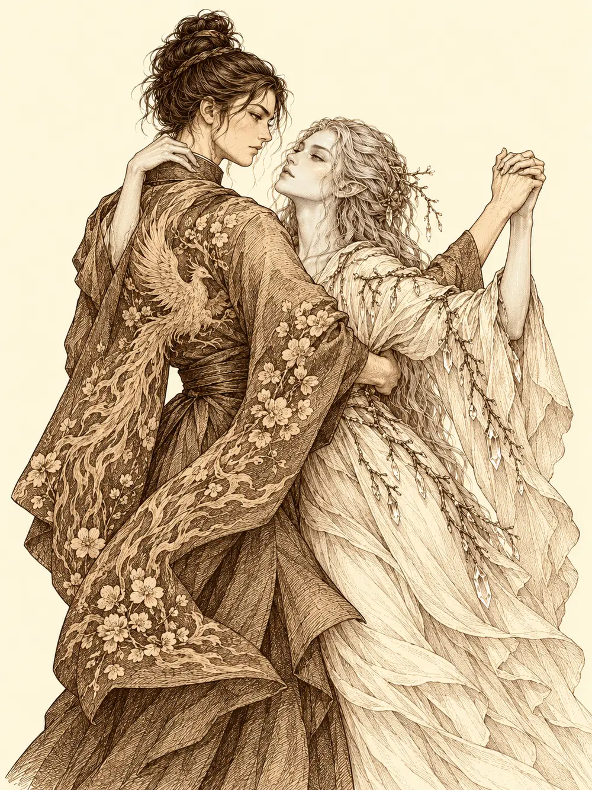

Capítulo 96
El baile
Libro VI · La Puerta Negra
La invitación de Rua llegó a la base de Sho en forma de cartas, y a la comandante Aka en forma de dibujos: un monigote con el casco de general del shogun, otros monigotes bailando en un salón, flores alrededor. Aka no leía bien y alguien en palacio lo sabía. Entendió que se trataba de un baile, que como comandante tenía que dar ejemplo y que era la primera vez que asistiría a algo así. Se lo pidió a Katari antes de pensarlo dos veces.
Unas doncellas le recogieron el pelo ceniza y le pintaron las uñas. El kimono le recordaba un poco a los que vestía de joven para el tiro con arco, pero llevaba flores y, en la espalda, el fénix entre llamas. Katari, que en principio no quería ir, apareció con un vestido blanco que Tsugami había cosido para ella: llevaba engarzados los cristales que le habían dado los espíritus, y entre los pliegues asomaban ramitas, una de ellas la que usaba para canalizar su magia. Cuando Aka la vio salir de la habitación fue corriendo a abrazarla. A la emisaria de los sueños se le puso la piel de un violeta intenso.
Rodrigo había invitado a Calista en cuanto supo que el baile era por parejas, y ella había aceptado entre dos montones de documentos. Habían ido juntos a la tienda de Tsugami. La corte marina, respondiendo a una carta de la tritón, le había enviado perlas, y con ellas la modista confeccionó un vestido que recordaba el oleaje, con un collar de perla negra al cuello, rareza en el fondo del mar. El kimono de Rodrigo era morado, con dragones bordados y algunas de aquellas perlas escondidas en la tela. Antes de salir, el elfo se echó perfume. Tsugami le había advertido, con toda la delicadeza de la que fue capaz, que olía un poco a pescado.
Gelbreak estaba en la sala con su armadura de cuero de siempre.
"¿Dónde vais?".
Calista le enseñó la invitación y le explicó, con una sonrisa encantadora, que la asistencia era obligatoria; que si no aparecía, lo buscarían. El drow tocó la tarjeta con un dedo morado y chispeante y la deshizo. Ella le contestó que no recibirla no lo eximía de nada, y que pediría a Guxi que le cobrara la tarjeta. Cuando él preguntó si había que ir vestido así, la tritón recordó en voz alta que alguien le había hablado de un batín, y se rio. Muy poco, pero se rio.
Fue entonces cuando Aka se enteró de quién era la recién llegada.
"¿De la corte del rey dragón, has dicho? ¿No estábamos casi en guerra?".
La comandante trazó a su alrededor un círculo de verdad, una luz rojiza que le brilló un instante en la piel. Dentro de él, Calista explicó que la habían enviado precisamente para promover la alianza entre las dos cortes, el comercio y la cooperación contra un enemigo común, y que en su tierra habían corrido rumores falsos para proteger el honor del príncipe; ella misma no había conocido toda la verdad hasta llegar a Kuroto. Gelbreak, que había empezado a desenvainar el estoque alegando que con aquella gente estaban en guerra, era el único sobre quien el círculo no había hecho efecto, y Aka lo sabía.
"No estamos en guerra. Hubo unos roces, nada más. Guarda eso".
El drow envainó, hizo una reverencia burlona y dijo que iría al baile. Sacó de una pequeña bolsa un puñado de polvos negros, se los echó por encima y la armadura se retorció hasta convertirse en un traje. Dejó el estoque al cuidado del gato de la casa y se ofreció a que lo registraran. Aka prefirió no tocarlo.
Las calles nobles de Sho estaban bordeadas de cerezos y de casas rodeadas de jardines, y el camino al salón de baile ardía de velas a ambos lados. Aka confió su arco a un samurái de la escolta, por si acaso. Por el camino, al pensar en el frente, le temblaron las manos.
"Me pone tensa ir a un baile mientras fuera sufren nuestros samuráis y las familias de los aldeanos".
Calista le aconsejó que no despreciara aquellas reuniones: en ellas se acordaban muchas cosas y se revelaban muchos secretos. Aka respondió que para la política había otras personas; ella había ofrecido su vida al shogunato. Miró a Katari y sonrió. Y por ella también.
En la puerta, los guardias comprobaron los nombres. Gelbreak se quedó rezagado y Calista se volvió hacia él.
"¿Qué ocurre? ¿Te intimida la corte? Lo comprendo. No está hecha para alguien como tú".
"Deja tus mentiras para más tarde", respondió él al pasar. "Las vas a necesitar".
Dentro, el salón olía a incienso y a comida. Los nobles se giraron a mirarlos tres o cuatro segundos, sobre todo a las tres mujeres, y volvieron a sus conversaciones. Katari se escondió detrás de Aka. Rua todavía no había bajado. Gelbreak, al pasar junto a Calista, le pisó el bajo del vestido de forma tan descarada que todos lo vieron. Ella recogió la tela sin perder la sonrisa.
"Los accidentes ocurren. Creo que este baile me va a gustar especialmente".
Aka pidió a un guardia que trajeran algo para limpiar aquel vestido y que vigilaran de cerca al drow, porque de él no se fiaba, y de su hermana, menos.
El primer grupo con el que tropezaron Calista y Rodrigo lo presidía un joven refinado que olfateó el aire con desagrado y se presentó como Shiryu Nori, de la segunda familia más importante de Kuroto, dueña de tierras en el norte y en Hakara. A Rodrigo le preguntó qué tierras tenía. Ninguna, dijo el elfo; había vivido toda la vida en el mar y la tierra lo había llamado. Nori lo trató de vagabundo, preguntó si contar historias daba para comer y le recomendó menos colonia.
"Las riquezas valen menos de lo que se cree", contestó Rodrigo. "Las historias perduran".
Las dos mujeres que acompañaban a Nori, Isoko y Jonae, tocaron sin pedir permiso las perlas del vestido de Calista y le enseñaron las suyas, que eran de Kuroto. La tritón las examinó con amabilidad de experta. Su estructura era única, dijo, aunque quizá les faltaba algo de nácar; las ostras no debían de estar bien alimentadas. Su corte acababa de traer un cargamento y empezaba a introducirlo en el mercado: podían ser de las primeras en tenerlas. Las dos miraron sus propias perlas como si hubieran perdido el brillo de golpe. Isoko quiso muestras exclusivas y mandó llamar a su marido para hablar de negocios. Mientras esperaban, Calista se acomodó en la silla de manera que se viera bien la mancha que la bota del drow había dejado en su vestido.
Aka, mientras tanto, intentaba cumplir con su deber. Unos nobles se interesaban por sus batallas; otros, con condescendencia, por sus dificultades para leer. Un hombre le acarició el hombro y le habló de que también se libraban guerras en el dormitorio. Aka, que no entendió la mitad, se apartó pensando en yokai que se aparecían en los sueños, y le dijo que prefería ir a beber con su pareja.
Katari se había quedado sola en una mesa hablando en voz baja con un pájaro diminuto hecho de luz. Una mujer de trenza negra muy larga se sentó a su lado, se presentó como Tamai Anari, pidió acariciar el pájaro y, al hacerlo, le rozó la mano con el meñique. Luego le besó la mano, le tocó el pelo, elogió su piel azul y fue arrimando la silla. Katari no sabía si en aquella corte esas cosas eran normales. Cada vez estaba más tensa. Cuando Tamai le sirvió sake y le dijo que no se pusiera así, la druida buscó a Calista con la mente.

Siento molestarte. Una duda. El contacto, ¿es algo normal aquí?
A Calista se le descompuso un segundo la sonrisa en mitad de su conversación de negocios. La explicación que le devolvió, sobre la confianza y el deseo, le permitió a Katari entender por fin lo que estaba pasando. Aka llegó poco después. Katari se refugió detrás de ella, dejaron claro que eran pareja y Tamai se disculpó y se retiró.
Rodrigo encontró en Yuichi un interlocutor interesado. El noble tenía una casa de puerta roja en el camino, una pequeña flota que comerciaba con Brunami y rutas complicadas por las guerras. El elfo le ofreció explorar pasos más seguros o ayudar en el mar. Después Yuichi fue a buscar a Calista, porque su esposa no hablaba de otra cosa que de sus perlas. Le besó la mano, escuchó la propuesta y la invitó a su casa dentro de un par de días.
"Si mi mujer quiere perlas, mi mujer tendrá perlas".
Era una cita, no un contrato, pero la tritón salió satisfecha. Al pasar junto a una columna, un hombre la agarró del brazo. Se llamaba Nomi, era hijo de comerciantes de suministros y olía a alcohol desde lejos. Calista le recordó con cortesía que no se tocaba a una dama sin permiso. Rodrigo apareció con un aperitivo y una copa de sake y le preguntó a Nomi si sabía que era de mala educación agarrar así a una mujer. El noble lo despreció por no tener apellido. Cuando volvió a echar la mano a Calista, ella rozó la perla negra de su collar y una pequeña serpiente asomó sobre su hombro y le siseó en la cara.
"¡Guardias!".
La serpiente desapareció. Para cuando llegaron los guardias no había nada que ver, y Calista les explicó que el señor necesitaba tomar el aire, que había bebido demasiado. Nomi juraba que el elfo le había echado algo encima. Se lo llevaron a él.
Más tarde, una mujer del clan Sando llamada Fumuki, que decía controlar los alimentos y el pescado de buena parte del norte, invitó a Calista a llevar productos de su corte esa misma semana para probarlos ante sus cocineros.
La música se detuvo. Por un lateral apareció Rua; por el otro, el shogun. Caminaba con bastón, cosa que antes no hacía, y tosía. Cuando llegó junto a su esposa se apoyó en ella. Todos los presentes se inclinaron. Katari hizo crecer las flores de la sala y dejó caer sobre la escalera una lluvia de pétalos de cerezo, y Rua, al notarlo, le guiñó un ojo.
Gelbreak seguía de pie. En la cabeza le sonó la voz de Calista: si apreciaba su cabeza, mejor que la agachara. El drow gruñó y se inclinó un poco, sin dejar de mirarla.
El shogun agradeció la asistencia y anunció que no bailaría por su salud; los observaría desde allí. Aka tomó a Katari por la cintura y por la mano. Era la primera vez que bailaba en su vida y lo hizo recordando los tambores que oía de niña, llevándola con una firmeza que no sentía. Katari se colgó de su cuello y se dejó llevar.
Rodrigo tendió la mano hacia Calista, pero quien se la tomó fue Fumuki, que lo agarró sin ceremonias y lo arrastró a la pista celebrando su figura. El elfo le explicó que no era a ella a quien invitaba, y luego decidió divertirse: empezó fluyendo con sus pasos y terminó llevándola él, manteniendo las distancias siempre que pudo.
Calista miró alrededor. Todo el mundo tenía pareja salvo una persona.
"Mira a tu alrededor", le dijo a Gelbreak. "Los marginados no lo pasan bien en una corte. Hay mentes retorcidas aquí. O bailas o llamas la atención de esa gente".
Él le dio la mano con cara de asco. No sabía bailar. Calista suspiró, lo colocó y movió el aire alrededor del cuerpo del drow como si manejara un muñeco.
"Tú déjate llevar. Por una vez, hagamos una tregua. Ni a ti ni a mí nos conviene el ridículo".
"Cuando rompas este aire, vigila tu espalda".
Ella le contestó que estaba acostumbrada a esa clase de amenazas. Bailaron hablando en susurros de maneras de influir en los demás. Él movió los dedos sobre su cadera y murmuró algo; ella deshizo el conjuro antes de que la alcanzara. Le habló de la corte como de un nido de serpientes, de cómo una persona hábil podía hacer que se mordieran entre ellas hasta coronar el nido sin que nadie lo supiera. Él la hizo girar con una sola palabra y ella, sorprendida, giró. Luego Calista lo envolvió en una corriente de aire que se le enroscó al cuerpo como una serpiente invisible y le siseó al oído.
"Y las más venenosas son las que parecen más inofensivas".
Gelbreak giró la cabeza buscando el animal y vio a Rodrigo, que se acercaba bailando con Fumuki. Le habló a Calista muy bajo, con una voz que había cambiado sin que ella lo notara.
"¿No te parece que tu acompañante da bastante miedo?".
Las aletas de la tritón se erizaron. Apartó la vista de Rodrigo de golpe. Cuando el elfo se acercó, ella se alejó bailando, guiando al drow hacia el otro extremo de la sala. Rodrigo vio el cambio y le susurró a Gelbreak que si le hacía daño iba a saber lo que era bueno. El drow sonrió. Ninguno de ellos sabía de dónde venía aquel miedo.
Cuando terminó la música, Calista mantuvo la compostura con un esfuerzo visible y, con un encantamiento suave, pidió a Gelbreak que la acompañara a saludar al shogun. Él la siguió como un perrito. La tritón le dijo al soberano que había venido para afianzar la alianza entre su corte y la de él, más necesaria que nunca con Otakemaru en el horizonte, y el shogun la invitó a pasar por palacio. Gelbreak se inclinó porque ella se lo pidió.
Luego el drow intentó devolverle el juego y le apretó la mano para llevársela él. Calista se separó un instante. En su lugar quedó una copia exacta de sí misma y la verdadera se volvió invisible. Gelbreak salió del brazo del duplicado, que se despidió en la calle con la voz de Calista, deseándole no tener que acudir a otro baile con él, y se deshizo en el aire. El drow se quedó solo en la acera y sonrió, divertido a su pesar.
Aka recogió su arco y se llevó a Katari de la mano hacia la base, deprisa.
Calista esperó a que Gelbreak se alejara. Cuando por fin salió, Rodrigo la encontró en la puerta. A la tritón se le levantaron las aletas, se le rizaron las escamas, se recogió el vestido con las dos manos y echó a andar rápido. El elfo la alcanzó antes de que se fuera, murmuró unas palabras y una calma tibia le bajó a ella por el pecho. Respiró aliviada.
"Lo siento. Creo que estoy un poco cansada. No sé por qué te tenía miedo".
"Quizá por lo bien que he bailado con esa señora que me agarró sin permiso. Me he divertido igualmente. Y ya tengo una excusa para ir a otro baile con vos".
Calista se rio y aceptó. Le pidió que la acompañara a la base, y por las calles de Sho, bajo los cerezos, se vio pasar a una mujer azul con un vestido de olas y a un elfo de kimono morado, caminando muy deprisa hacia algún sitio.